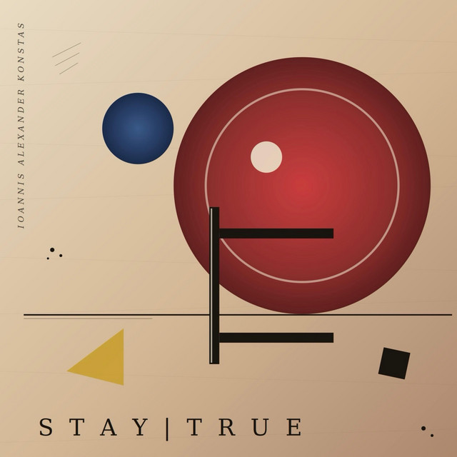

Stay True
Featured: “Void Between Heartbeats” — A Signature Composition
Void Between Heartbeats unfolds within the silent space between pulses, where awareness drifts beyond certainty and into the unknown. Accompanied by a visual of a rare light metronome moving through the void, the track explores the hidden rhythm that exists beneath thought, memory, and identity.
Rooted in the 1970s origins of Bronx breaking and street dance, the ticking metronome measures more than tempo — it preserves a fifty-year lineage of internal rhythm. Cutting through rare light and shadow, the track steps past conscious thought, memory, and identity to reveal the solitary, primordial pulse that survives the void.
Watch the music video →Tracklist
Tap a track to play a preview right here, via Spotify’s own player.
- 17:00
- 23:34
- 33:17
- 43:30
- 53:21
- 64:52
- 74:37
- 84:08
- 93:57
- 105:25
- 114:03
- 124:11
- 134:13
- 144:55
- 152:12
- 167:13
- 173:44
- 184:52
- 193:36
- 203:59
- 213:49
- 224:38
- 236:56
- 244:48
- 254:27
- 264:41
- 271:58
- 283:28
- 293:48
- 303:17
- 314:21
- 323:41
- 334:50
- 345:02
- 355:00
℗ & © 2026 6722978 Records DK